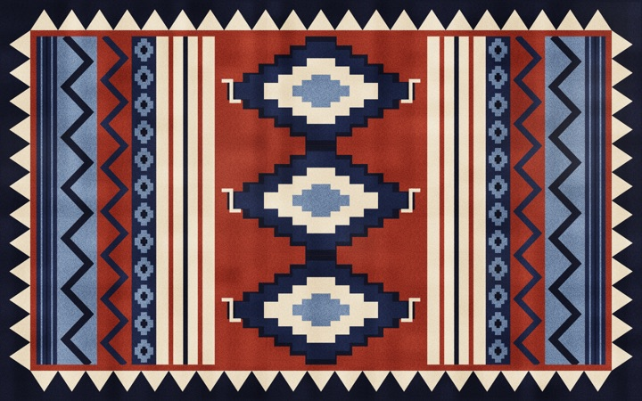
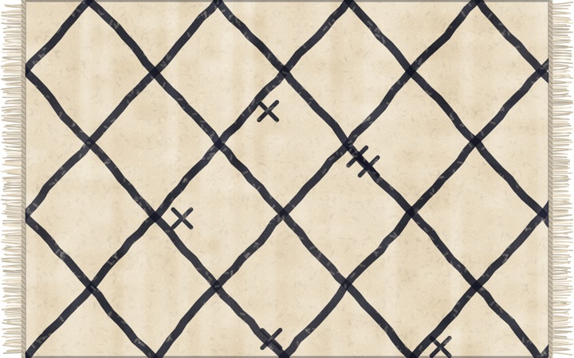
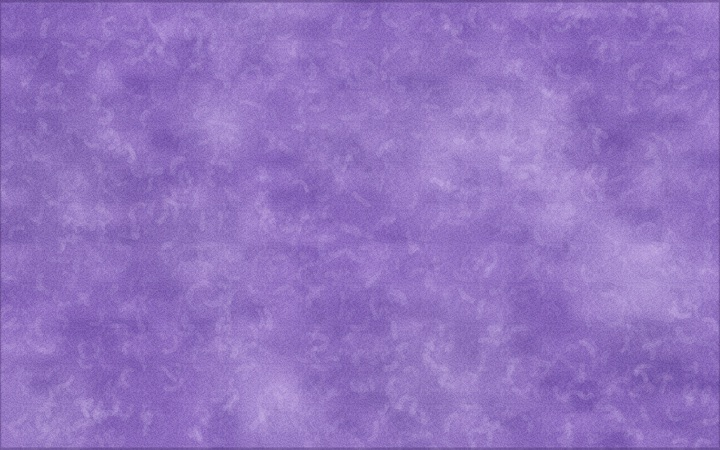
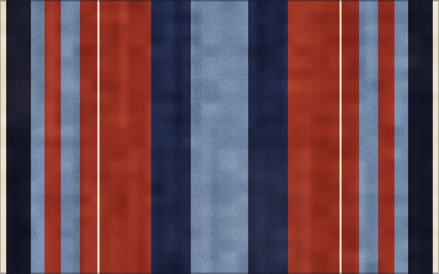
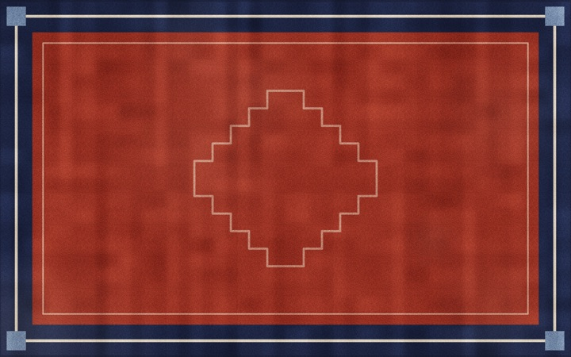

It behaves like fabric
It moves like a heavy wool rug. Lift a corner and it flops back down. Fold it and it stays folded.
Fold and curl
Grab any part and drag to lift, fold or curl it. Drag a fold back to undo it, or double-click to smooth it all out.
Drapes over your icons
Each desktop icon makes a bump under the rug. Piles of icons make bigger bumps.
Design your own
Persian, Kilim, Berber, Shag, Stripes or Bordered, with your choice of colours, fringe, wear and pile length.
Stack several rugs
Rugs rest on one another. Save sets of them as arrangements and switch between them from the menu bar.
Fabric sounds
A soft, muffled wool swish while it moves, and a gentle thump when a fold lands. One click to turn off.
Light on your Mac
A rug at rest uses next to no CPU. No fans, no battery drain, even though it lives on your desktop all day.
Pick a pattern
Every pattern is drawn by the app, in any palette you like.





Nothing leaves your Mac
No account, no analytics, no ads, no tracking. Tapis doesn’t know who you are.
Saved on your Mac
Your rugs, designs and arrangements are kept on your Mac only. Nothing is synced or uploaded.
Your desktop stays yours
Tapis asks Finder where your icons are, only so the rug can drape over them. That never leaves your Mac.
Just one check, for updates
To see if there’s a new version, Tapis reads a public list on GitHub. It sends nothing about you or your Mac.